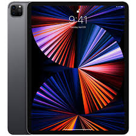

iPad Pro сериясы
Тарихы
iPad Pro — Кәсіби планшеттің эволюциясы
Анонстар мен шығу күндері
- iPad Pro (1-ші буын): 9 қыркүйек 2015
- iPad Pro (2-ші буын): 5 маусым 2017
- iPad Pro (3-ші буын): 30 қазан 2018
- iPad Pro (4-ші буын): 18 наурыз 2020
- iPad Pro (5-ші буын): 20 сәуір 2021
- iPad Pro (6-шы буын): 26 қазан 2022
- iPad Pro (7-ші буын): 15 мамыр 2024
Негізгі ерекшеліктер
- Apple M4 чипі: 10 ядролы CPU және GPU
- OLED Ultra Retina XDR дисплей, 1600 нитке дейін
- Apple Pencil Pro және Magic Keyboard қолдауы
- USB-C Thunderbolt 3 қосылымы
- Жад: 256 ГБ / 512 ГБ / 1 ТБ / 2 ТБ
Модельдерді салыстыру
- 11 дюймдік: Компактты және жеңіл
- 13 дюймдік: Креатив үшін үлкен экран
Пікірлер мен қабылдау
iPad Pro жоғары өнімділігі мен кәсіби мүмкіндіктері үшін мақталады. Бұл дизайнерлер, музыканттар, инженерлер және кәсіпкерлер үшін толыққанды құрал.
Жабдықтау және аксессуарлар
- Жабдықта: iPad Pro, USB-C кабелі, адаптер
- Қосымша: Apple Pencil Pro, Magic Keyboard